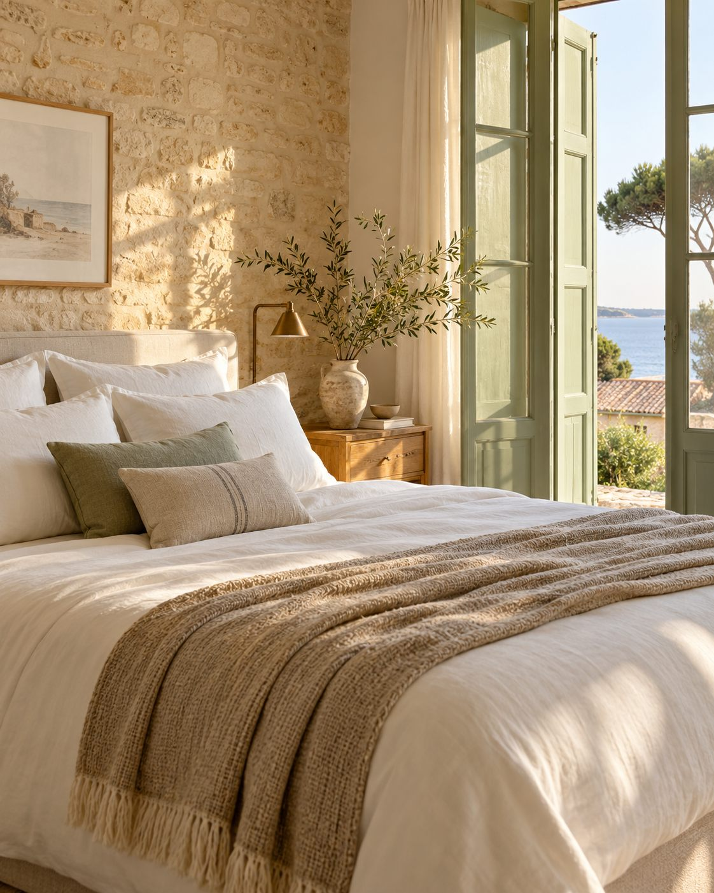

LA TRANQUILLITÉ, DE A À Z
La gestion complète
Selon le périmètre convenu, l’accompagnement réunit le suivi des annonces et réservations, les échanges avec les voyageurs et la coordination des prestations du logement.
- Suivi des annonces, tarifs et réservations, selon les accès confiés
- Échanges voyageurs et organisation des arrivées, selon disponibilités
- Ménage, linge et préparation soignée entre chaque séjour
- Coordination de professionnels pour les interventions convenues